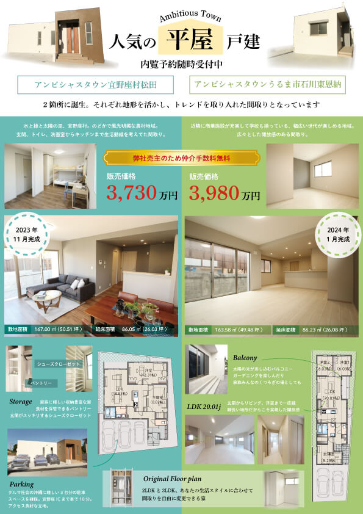
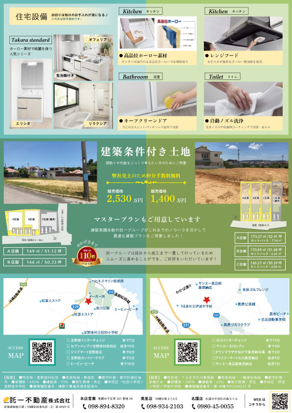

サイズ： A4
物件の撮影・写真の編集・間取りの制作・地図の制作・フライヤー制作・印刷発注
販売中の戸建ての「平屋」に限定したチラシを制作しました。
平屋のメリットである開放感のある内装や、トレンドを取り入れた間取りをアピールしました。
また、2棟の良さを比較してわかるように縦に2つのカラムにしました。
間取りから直接アピールポイントを引っ張ることで一目でわかりやすいデザインにしました。
駐車場が3台分ある松田の戸建ては、車のある写真がなかったため、CADで同じ間取りの3Dの外観を作り、車を配置し、同じ角度で写真の素材を書き出しました。それを重ねて合成することで車を駐車したような外観写真を作りました。
表面

裏面
